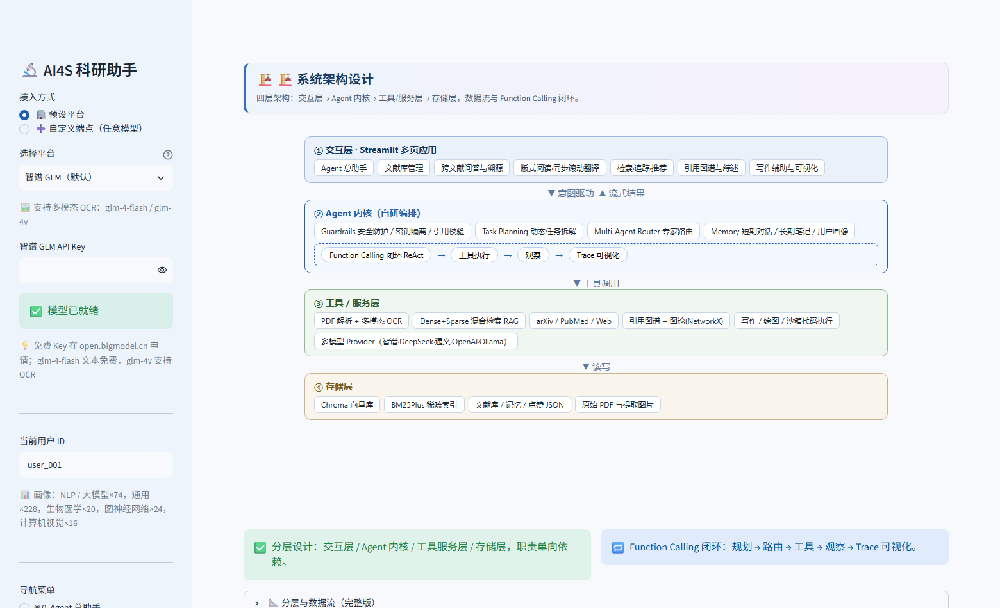
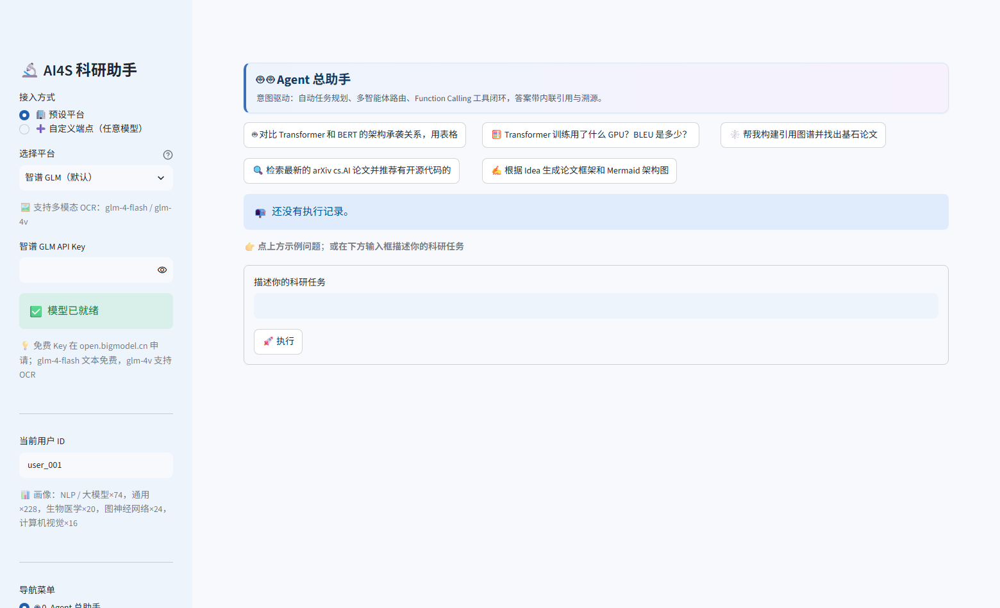
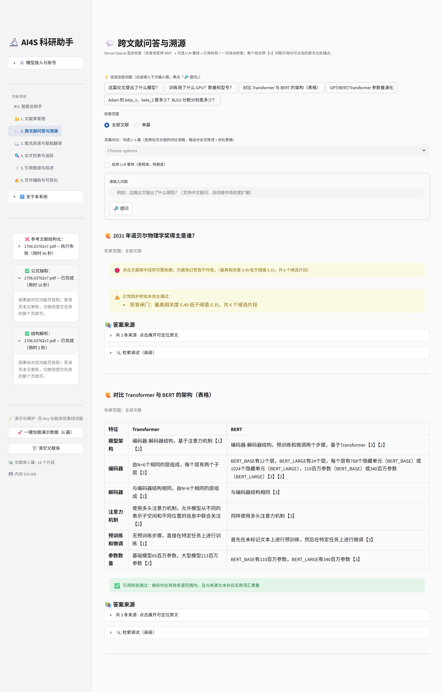
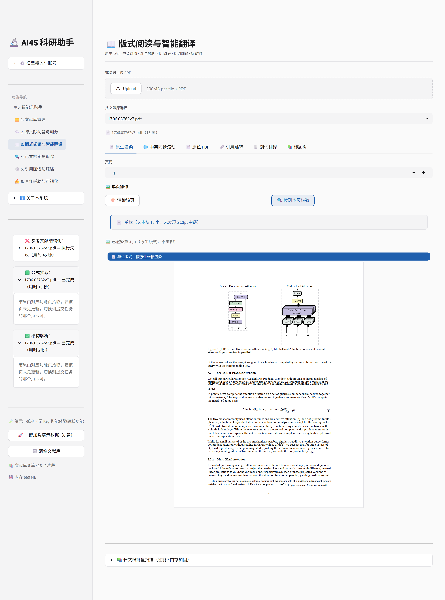
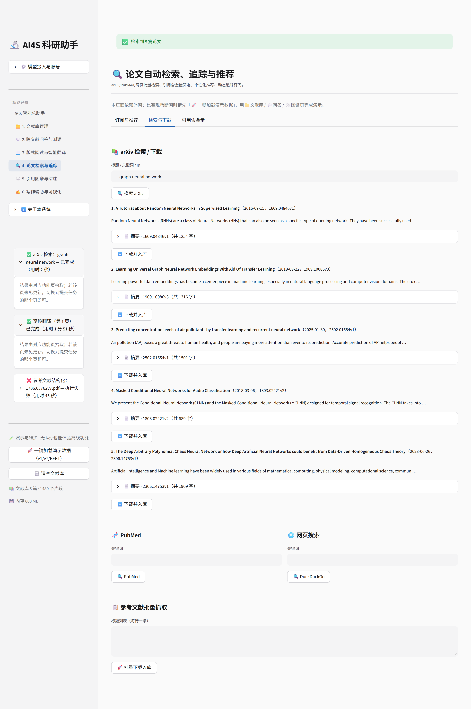
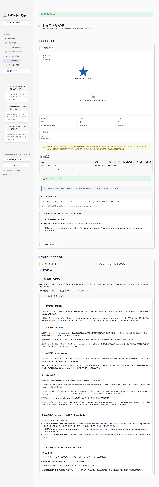
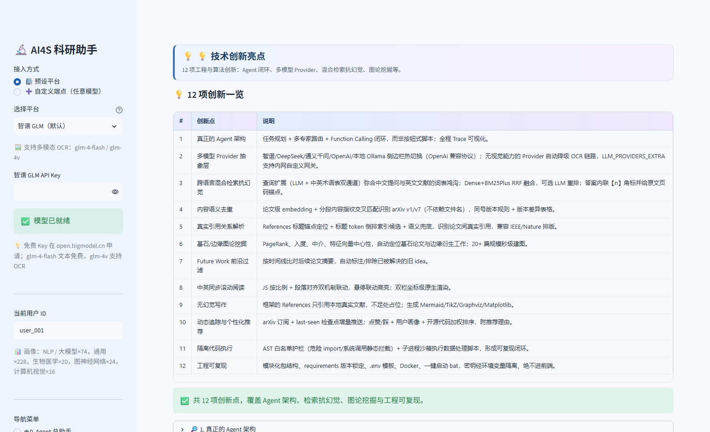

2026 年，大语言模型（LLM）与 AI Agent 技术引发了全球科学研究范式的深度变革，AI4S（AI for Science） 已从简单的文献摘要提取，跨越到能够自主进行文献阅读、逻辑推理、假设提出、实验代码生成乃至论文草稿撰写的 「AI 科学家助手」新阶段。然而，真实科研场景对学术规范、长上下文、复杂排版与「幻觉零容忍」的确定性要求， 使通用 Chatbot 远无法满足需求。
本项目面向真实科研全流程，从 0 到 1 设计并实现一款全栈式、具备自主规划与协同能力的 科研助手 Agent。系统以现代 Web 应用为形态，后端 Agent 通过任务规划、多专家路由与函数调用闭环， 自主调度文档解析、混合检索、学术 API、图谱计算与代码执行等 16 个工具，覆盖赛题要求的六大功能模块， 实现「文献导入 → 解析 → 问答 → 阅读翻译 → 检索追踪推荐 → 图谱综述 → 写作输出」的完整闭环。
| 维度 | 数据 |
|---|---|
| 功能模块 | 赛题六大模块全覆盖，9 个功能页面 + 1 个 Agent 统一入口 |
| Agent 内核 | Guardrails → Task Planning → Multi-Agent Router → Function Calling 闭环 → Trace 可视化 |
| 工具链 | 16 个注册工具（OpenAI Function Schema），原生调用 + ReAct 双保险 |
| 抗幻觉机制 | 跨语言混合检索（BM25Plus + 向量 + RRF + LLM 重排）+ 内联角标 + 页码锚点 + 角标校验自动修复 |
| 官方数据集实测 | v1/v7 语义去重命中 98%、改名场景 100% 命中、541 页正版教材 26.3s 入库、15 页扫描件自动识别 |
| 质量保障 | 18 项单元测试、离线自测、AppTest 全页面渲染检查、官方 PDF 验证脚本，全部通过 |
| 痛点 | 具体表现 | 对应能力 |
|---|---|---|
| 信息过载与时效 | arXiv 日均更新数百篇，人工检索、过滤、去重、搭建图谱效率低 | 自动检索、订阅式动态追踪、内容级语义去重 |
| 读写效率与严谨 | 跨语言阅读、细粒度数据提取耗时；模型幻觉在学术场景不可接受 | 混合 RAG、内联溯源、联动翻译、中译英 |
| 复杂版式解析 | 扫描件、双栏排版、公式、图表、参考文献难以结构化 | 多模态 OCR、细粒度解析、标题锚点定位 |
| 创意落地与复现 | 数据可视化、架构图、Idea 验证缺乏整合代码与 API 的工具 | 沙箱代码执行、自动绘图、复现导向推荐 |
| 赛题模块 | 要求要点 | 本系统实现 | 验证方式 |
|---|---|---|---|
| 模块一 PDF 管理与细粒度解析 |
批量上传 + 语义级去重（非仅凭文件名） | 正文分段指纹（5 段 × 1200 字）交叉匹配 + 整篇向量双通道，v1/v7 实测 98%、改名实测 100% | verify_official.py 官方 PDF 实测 | 扫描件 OCR | 文本层自动检测，缺失判定 scanned 并逐页多模态 OCR，带进度条 | 1706.03762v1_img.pdf 检测通过 | 百页长文档工程鲁棒性 | 541 页正版《Understanding Deep Learning》1523 分块 26.3s 入库，进程内存约 292MB | verify_official.py 实测 |
| 模块二 抗幻觉问答 | 细粒度单篇问答 + 出处锚点 | 混合检索 + 【n】内联角标 + 论文/页码锚点 + 点击展开原文 | 问答页检索调试面板 | 跨多篇演进对比 | BERT vs Transformer、GPT-1/2/3 演化等多文聚合推理 | 跨文献对比快捷按钮实测 |
| 模块三 版式阅读与翻译 | 标题树导航 + 引用双向跳转 | 标题锚点定位 References（兼容 IEEE/Nature 排版），[11]→[38] 编号区间实测命中 | 官方 v1 实测 41 条条目 | 中英对比 + 同步滚动 | JS 按比例 + 段落对齐双机制同步滚动，悬停联动高亮，划词经后端代理（无密钥暴露） | 阅读页实测 |
| 模块四 检索追踪推荐 | 标题下钻下载 + 含金量筛选 + GitHub 复现检测 | arXiv/PubMed/Web 三源检索，正则剔除应付式引用，GitHub 链接自动识别加权 | 检索页实测 | 定期追踪 + 点赞/踩 + 多用户推荐 | 订阅式增量追踪（last-seen 检查点）+ 常驻守护脚本 + 多用户点赞/踩持久化 + 画像加权排序 + 推荐理由 | 单元测试 + 守护脚本 |
| 模块五 引用图谱与综述 | 20+ 篇图谱 + 基石节点挖掘 | 标题锚点参考文献区 + 倒排索引候选（IDF 稀有度加权）+ 语义兜底；PageRank/中介/特征向量中心性；n=20 建图 7.9s、n=40 建图 25.0s | bench_graph.py 压测 | 自动综述 + Future Work 过滤 | 图谱驱动综述生成；Future Work 按时间线比对后续摘要，自动标注已解决 idea | 图谱页实测 |
| 模块六 写作与可视化 | 无幻觉论文框架 | References 仅引用本地真实文献，不足处显式占位 | 写作页实测 | Mermaid/TikZ 拓扑图 + 沙箱执行 | 四类脚本生成；run_python 经 AST 白名单护栏校验后隔离执行 | 单元测试拦截用例 | CSV 可视化 + Figure Caption + 中译英 | 六类图表（含三维雷达）自动生成，学术图注提炼，中英双向翻译 | demo_data/data.csv 实测 |
Agent 内核采用「LLM 优先、规则兜底」策略：路由与规划优先由 LLM 以 JSON 输出，失败时退化为关键词路由与 固定步骤模板；工具执行采用原生 Function Calling + ReAct 文本解析双保险，最大迭代 8 轮， 超限则在无新增工具时强制总结，保证闭环可终止。每步记录 Trace（工具名、参数、结果摘要），前端可视化呈现「AI 思考过程」。
系统按 core / services / tools / ui / config 分包：core 仅负责推理与编排（agent / router / planner /
memory / guardrails / llm / sandbox），services 封装业务能力（parsing / rag / library / graph / track / translate /
writing / state），tools 将 Python 函数统一注册为 OpenAI Function Schema，ui 仅负责渲染。依赖单向向下，
便于测试与扩展；全部离线逻辑可在无 API Key 环境下自测运行。

| 类型 | 选型 | 选型理由 |
|---|---|---|
| 文本 LLM | 智谱 GLM-4-Flash（默认），可经环境变量切换 DeepSeek / Qwen / GPT 等任意 OpenAI 兼容端点 | OpenAI 兼容协议、成本低、中文与工具调用稳定；免费额度友好，符合赛题「合理规划 API 费用、鼓励开源模型」的导向 |
| 多模态 / OCR | GLM-4V，可扩展 Qwen2-VL / PaddleOCR / Marker | 处理扫描件与复杂版式，完成图文、公式、表格识别；无 Key 时自动降级为原生文本层提示 |
| Embedding | Chroma 内置 ONNX 向量模型（all-MiniLM-L6-v2，384 维） | 本地离线推理、免额外部署费用，天然满足「离线可复现」；支持 HF 镜像加速下载 |
| Rerank | 可选 LLM 重排（编号排序法） | 无需额外重排服务即可提升 top-k 精度，开关可控成本 |
学术场景的典型矛盾是：文献是英文、提问是中文，单一向量检索对「超参数、GPU 型号、BLEU 分数」这类 精确词面反而不如关键词检索。系统为此构建了四段式检索管线：
查询 → ① 查询扩展（LLM 在线生成英文检索词，离线术语映射表兜底）
→ ② 双路召回：Dense（Chroma 向量 top-k）‖ Sparse（BM25Plus × 多扩展查询取最大）
→ ③ RRF 融合：RRF(d) = Σ 1/(60 + rank_i(d))
→ ④ 可选 LLM 重排 → 注入带【n】编号的编号化上下文分词设计是稀疏路生效的关键：文档与查询统一经「英文 Porter 词干归一 + 中文二元组切分」， 并将 BM25 的 IDF 下界设为 0.05（标准 BM25 对「全部文档都含查询词」的小语料库会把 IDF 压成 0，导致中文查询零召回—— 本系统实测修复后同查询 BM25 召回 7 条 / Dense 召回 11 条，融合后重排精确定位）。扩展词与两路召回数量在 问答页「检索调试」面板透明展示，检索行为可审计。
【n】 内联角标、资料不足必须明说、禁止编造；去重采用「整篇向量 + 正文分段指纹」双通道：入库时均匀抽取 5 个 1200 字内容段生成指纹向量， 查重时与库内论文指纹逐段交叉匹配、按来源聚合取平均相似度；同时保留整篇向量相似度作为第二信号， 两通道分别给出可解释证据（「分段指纹内容匹配 98%」或「整篇语义相似度 100%」）。 判定规则：通用阈值 0.90；同一 arXiv 号且相似度 ≥ 0.7 判为版本演进（仍以语义为依据，非仅凭文件名）， 并触发「保留最新版」建议与版本差异总结。
attention_v1.pdf 再传 → 仍 100% 命中，证明判定完全基于内容。Router 将意图分流至 6 类专家（问答 / 检索 / 图谱 / 写作 / 阅读 / 解析），各专家仅持有完成任务所需的 工具子集，降低误调用面；Planner 将复杂任务动态拆解为有序步骤并交由 Function Calling 闭环执行。
| 层 | 机制 | 实测 |
|---|---|---|
| 输入层 | 提示注入特征检测（忽略指令 / 系统提示词提取 / 角色劫持等模式） | 拦截用例通过 |
| 输出层 | 响应密钥正则脱敏、引用角标校验与自动修复 | 单元测试通过 |
| 执行层 | run_python 先经 AST 静态检查：import 白名单（numpy/pandas/matplotlib/plotly/sklearn 等）、
危险名黑名单（os / sys / subprocess / eval / open 等）、dunder 属性链（__globals__ /
__subclasses__）与 __import__ 拦截；违规直接拒绝并返回可读原因 | 4 类绕过手法全部拦截，正常绘图代码放行 |
注册中心将 16 个 Python 工具封装为标准 Function Schema 并按名执行，涵盖：文献检索、多文推理问答、 arXiv / PubMed / 网页搜索、下载入库、引用图谱构建、综述与前沿提炼、写作框架、Mermaid/TikZ 绘图脚本、 数据可视化、翻译、沙箱 Python 执行、记忆读写。所有调用在 Trace 面板可回放。

单篇问答可定位超参数、GPU 型号数量、BLEU 分数、完整引用等细粒度信息并给原文锚点；多篇推理通过跨文档
Chunk 聚合，支持 BERT 与 Transformer 的承袭 / 抛弃、GPT-1/2/3 参数量演化、LayerNorm 位置与上下文窗口
递增等对比分析，答案内联 【n】。检索调试面板显示 Dense / Sparse 两路各自召回数与查询扩展词。


scripts/watch_daemon.py 常驻守护脚本实现真·定期抓取，
与 Streamlit 会话解耦；
引用关系判定三层递进：① 标题锚点定位每篇的参考文献区并切分条目；② 标题 token 倒排索引 + IDF 稀有度加权生成候选（词面巧合的泛词如 transformer 得 0 分，稀有词组合才计分）， 将 O(n²) 全文比对降为稀疏候选比对；③ 候选内以「条目↔标题」双向包含判定，另以复用库内向量的语义兜底 捕获缩写标题（如 BERT 论文标题被 Attention 论文引用）。
在「逻辑著作」层建图（同一 arXiv 号取最新版本为唯一节点，旧版本不产生孤立节点），运用 PageRank、入度、 中介与特征向量中心性挖掘基石 / 边缘论文；基于图谱自动生成领域综述；提取各文 Future Work，按时间线比对 后续论文摘要，自动标注并排除已被解决的旧 idea，提炼真正开放的方向。官方 PDF 实测：BERT → Attention 真实引用边， 证据为参考文献条目 100% 匹配，基石论文正确识别为《Attention Is All You Need》。


| 用例（赛题指定） | 输入 | 实测结果 |
|---|---|---|
| 语义去重 v7→v1 | 真实官方 PDF | 分段指纹内容匹配 98.0%（最佳段 100.0%）+ arXiv 同号证据，提示「库中已有版本较更新，建议保留」✅ |
| 去重不依赖文件名 | v1 改名 attention_v1.pdf | 整篇语义相似度 100% 命中，文件名为干扰项 ✅ |
| 非同篇不误报 | BERT 论文入库 | 相似度 0.652 < 0.90，正确判定为不同论文 ✅ |
| 图像扫描件 | 1706.03762v1_img.pdf | 15 页原生文本 0 字符，自动判定 scanned=True，进入 OCR 通道 ✅ |
| 超长文档 | 正版《Understanding Deep Learning》541 页 / 131.4 万字 | 1523 分块、入库 26.3s、进程内存约 292MB，全程进度反馈 ✅ |
| 真实引用图谱 | v7 + BERT 官方 PDF | 1 条真实引用边（BERT→Attention），参考文献条目 100% 匹配证据，基石论文正确 ✅ |
| 大图谱性能 | 20 / 40 篇合成文献 | 建图 7.9s / 25.0s（优化前 49s / 222s），HTML 渲染 0.1–0.2s，边数与精度不变 ✅ |
| 跨语言混合检索 | 中文查询 vs 英文文献 | 查询扩展生效，BM25 召回 7 条 / Dense 召回 11 条，RRF 融合重排 ✅ |
| 层级 | 内容 | 结果 |
|---|---|---|
| 单元测试 | tests/test_core.py：分词、跨语言检索、内容去重、引用定位与建图、执行沙箱拦截、Guardrails、追踪增量、点赞推荐、Agent 闭环（Mock LLM），共 18 项 | 全部通过 |
| 离线自测 | scripts/selftest.py：不依赖网络与 Key 的端到端冒烟（检索链路、去重、图谱、沙箱、追踪） | 全部通过 |
| 页面渲染 | scripts/apptest_check.py：Streamlit AppTest 驱动全部页面与核心交互 | 9/9 页面通过 |
| 官方数据验证 | scripts/verify_official.py / bench_graph.py：可一键复跑本文全部实测数字 | 数据可复现 |
入口统一 try/except 渲染错误卡片（可折叠堆栈）而非白屏；网络失败（arXiv 超时）给出降级提示与重试入口； 无 API Key 时功能页显示「请填入 Key」与可演示路径；空文献库时问答 / 图谱 / 阅读 / 写作页给出引导提示。 评审环境多文档并发场景以进度条 + 分页入库控制内存峰值。
# 本地（conda）
conda activate ai_research && pip install -r requirements.txt && streamlit run app.py
# Docker（在线演示，端口 8501）
cp .env.example .env # 填入 API Key（仅环境变量，不入库）
docker compose up -d # 评审期间保持公网可用，提供评审测试账号依赖版本锁定：requirements.txt 固定 streamlit>=1.63,<1.64 等经实测验证的版本区间，
保证评审机与开发机行为一致；前端 HTML 渲染另设兼容层，自动适配新旧组件 API。

本项目围绕真实科研痛点，完成了具备 Agent 内核、跨语言抗幻觉 RAG、内容级语义去重、多模态解析、 真实引用图谱挖掘、订阅式追踪与学术写作可视化能力的全栈科研助手；六大模块闭环贯通，全部关键指标以 官方赛题 PDF 数据集实测背书（去重 98%/100%、541 页 26.3s、n=40 建图 25s、真实引用边与基石识别）， 并以三层测试体系保证可复现与稳定。
① 接入更多开源 / 本地推理模型与专用 OCR 管线（PaddleOCR / Marker），进一步降低成本与网络依赖； ② 深化 Multi-Agent 协同与自我进化（基于点赞反馈自动优化工具策略与检索权重）； ③ 扩展真正的多用户协同与云端部署；④ 增强实验代码自动生成与结果复现，向端到端「AI 科学家」演进。
python scripts/verify_official.py、
python scripts/bench_graph.py、python -m unittest discover -s tests 一键复跑验证。